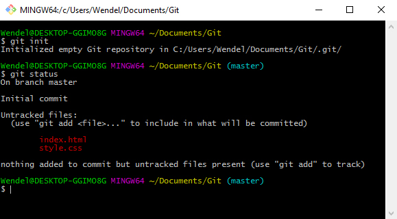
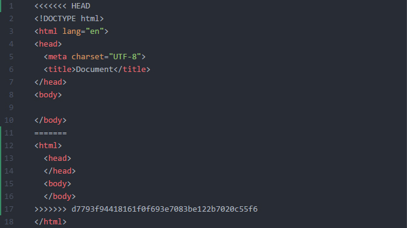

Wendel Nascimento
Front-end developer
O que é git?
Um sistema de controle de versão
- Concorrente do SVN
- Open-source
Por que eu devo usar git?
- Performance
- Segurança
- Flexibilidade
E o que eu ganho com isso?
NADA
Fluxo de trabalho não centralizado
WTF professor?
Trabalho local
Escalabilidade
Comunidade muito ampla, você nunca está sozinho
Aplicável não apenas na área de desenvolvimento, pode ser usado para marketing, design, suporte ao consumidor e até mesmo para RH!
RH?
Sim!
- Gratuito
- Comunidade ampla
- Integrações
- Funcionalidades que facilitam a nossa vida
Alternativamente temos...
Mas hoje iremos utilizar o GitHub
Então vamos criar nossa conta e começar a brincar de versionar
Guarde bem o usuário e senha que vamos criar agora
Clique no link que foi enviado em seu email
Professor, eu criei minha conta, mas como que eu uso isso?
Criando um repositório e instalando o Git em sua máquina
O que é um repositório e como crio um?
Como instalo o Git?
Caso você use Windows
Caso você use Linux
Caso você use Mac
Mas Wendel,
Como tudo isso funciona? É de comer?
Primeiro, vamos abordar e trabalhar 3 coisas muito importantes no git
Repositórios, Commits e Branches
Hora da revisão
Repositórios
Pastas onde ficam os arquivos do seu projeto
Commits
São como fotos
do seu trabalho
Branches
O que são? Por que usamos? O que acontece com elas? Hoje, no Git repórter
Uma branch é basicamente
Uma cópia dos seus arquivos
Hora do show
BIRLLLLLL
init, clone, config, add, commit, etc...
$ git init
Inicializa um repositório(lembra dos repositórios?) no diretório atual
$ git remote add origin
https://github.com/usuario/repositorio.git
Adiciona um repositório remoto
$ git clone
https://github.com/usuario/repositorio.git
O git clone faz um download de um repositório remoto, caso você não esteja começando um do zero, é ele que você deve usar
Neste caso, usaremos o remote add origin
git remote add origin https://github.com/usuario/repositorio.git
$ git pull
O git pull faz o download de todas as alterações que foram feitas no repositório
- Abra seu editor de texto preferido(Só não vale bloco de notas)
- Abra a pasta do nosso projeto em seu editor
- Crie um novo arquivo com o nome index.html e um style.css
Dentro do index.html, digite
<html></html>
Dentro do style.css, digite
body: { background: #666; }
Salve e volte ao Git Bash, precisamos subir estes arquivo para o nosso repositório remoto
Primeiro, precisamos ver quais os arquivos que alteramos
$ git status
Este comando deve te retornar algo parecido com isso:
Agora podemos adicionar os arquivos à nossa área de stage
Área de stage?
A área de stage é basicamente o lugar onde você escolhe quais arquivos irão para o repositório remoto
$ git add index.html
Com isso, estamos quaaaase prontos para subir nossos arquivos para o nosso repositório remoto. Precisamos apenas dar um commit
Um commit é, basicamente, um "snapshot" do estado atual dos seus arquivos.
Ele guarda informações como data, hora, arquivos modificados e estado dos arquivos modificados.
Tudo isso pode ser usado para quando você precisar desfazer alguma coisa, por exemplo
$ git commit -m
"Criação do index"
Agora estamos prontos para subir para o repositório remoto
Lembre-se, tudo o que você fez até agora, foi local, ou seja, nada está no repositório remoto
Até agora...
Putz, esquecemos de adicionar o style.css, e agora?
Fique em posição fetal e chore
Mentira, eu não faria isso com vocês
Vamos dar um --amend
$ git commit --amend
O --amend permite que você "edite" o commit anterior, isso inclui adicionar outros arquivos aquele commit
Agora, com --amend feito e tudo bonitinho, só falta uma coisa
O git saber quem você é
Mas isso é simples, 2 comandinhos
Nome
$ git config --global
user.name "Seu nome"
E email
$ git config --global
user.email email@email.com
E finalmente...
$ git push origin master
Esse é o "comando do alívio"
Pronto. É só digitar seu username, senha e partir pro abraço
Digamos que você passou da parte 1
Round 2
.gitignore
Um arquivo onde você pode indicar quais pastas/arquivos devem ser ignorados e jamais devem ir para o repositório remoto
Por que ignorar arquivos? Simples: Nós devemos subir apenas arquivos necessários para o desenvolvimento
Então vamos criar um arquivo com o nome .gitignore
Dentro deste arquivo, coloque o seguinte texto
*.jpg
Salve o arquivo
Coloque uma imagem qualquer(desde que seja .jpg) na pasta do seu repositório
$ git status
Apareceu algo na cor vermelha?
Branches
Relembrando...
Cópias do seu trabalho
Criar uma branch é bem simples
$ git branch nomedobranch
Isso irá automaticamente fazer uma cópia do seu estado atual na branch nomedobranch
Mas isso ainda não quer dizer que você pode começar a mudar o código de forma descontrolada
Isso fará com que você comece a trabalhar em sua branch
$ git checkout nomedobranch
O comando checkout muda o seu HEAD
HEAD é um ponteiro que o Git usa para saber onde você está trabalhando
Agora sim, pode brincar à vontade
Terminei o que eu tinha pra fazer na minha branch, como eu faço ela se unir à principal?
Merge
Lembra dessa imagem?
Para fazer um merge é bem simples
$ git checkout branchDestino
$ git merge branchOrigem
Isso irá iniciar o processo de merge, que pode resultar em duas coisas
- Fast-forward
MerdaConflito
Resolvendo conflitos
Antes de mais nada, calma. Primeiro volte ao editor de texto, seu arquivo deve estar parecido com isso
Vamos entender melhor isso
Professor, resolvi o conflito, e agora?
Criamos um novo commit, ué
$ git add index.html
$ git commit -m
"Resolvendo conflitos"
$ git push origin master
Log
Um histórico de commits
Desfazendo coisas
Para voltar e desfazer alguma merda coisa errada, temos basicamente, três caminhos:
- Checkout
- Revert
- Reset
Checkout
Acabamos de usar ele nas branches, lembra? Em tese, o que faremos agora é o mesmo, mudaremos nosso HEAD
$ git checkout 9b669aa
Lembre-se, o checkout é um comando read-only, ou seja, você não vai voltar para a versão anterior e perder tudo o que tem
Revert
$ git revert 9b669aa
Sua segunda chance pra fazer direito

Ele volta você ao commit especificado e permite com que você crie um novo commit a partir deste
Reset
Muito cuidado com este comando. Ele é excelente para resolver problemas, mas também é ótimo para criar
$ git reset HEAD
Até aqui tudo ok, ele irá remover os arquivos que você mandou pra área de staging
$ git reset --hard 9b669aa
Isso apaga tudo o que você fez e volta seu repositório para o estado do commit 9b669aa
Professor,
Qual vai ser o problema agora?
Não tem mais problema agora
Agora é hora
Das técnicas ninja
Rebase
$ git pull --rebase origin branch
Reescreve o histórico de commits. Muito útil para facilitar a resolução de conflitos
Reflog
$ git reflog
Parecido com o git log, porém não traz apenas o histórico de commits. Traz desde commits até checkouts, resets, rebases, etc
Bisect
O cara que acha o bug pra você
$ git bisect start
$ git bisect bad HEAD
$ git bisect good 9b669aa